먹이 주는 화면
먹이 2개를 고르면 이모지 똥이 나오던 데모가, 똥칸에 사는 똥에게 먹이를 주는 게임이 됐습니다.
처음
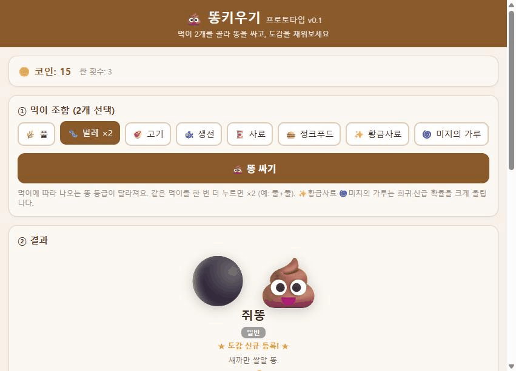
지금
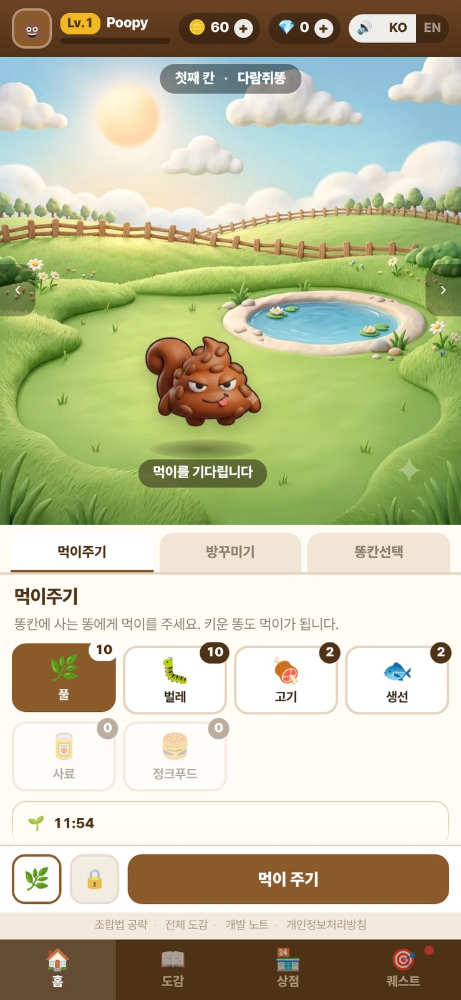
프로젝트 04 / 05유지 운영 · v4
똥에게 먹이를 주고 46종 도감을 채우는 웹 게임입니다.

Unity로 기획한 모바일 게임이 HTML 파일 하나짜리 웹 게임이 되기까지입니다.
유전 교배로 희귀한 똥을 노리는 안드로이드 앱이 처음 구상이었습니다.
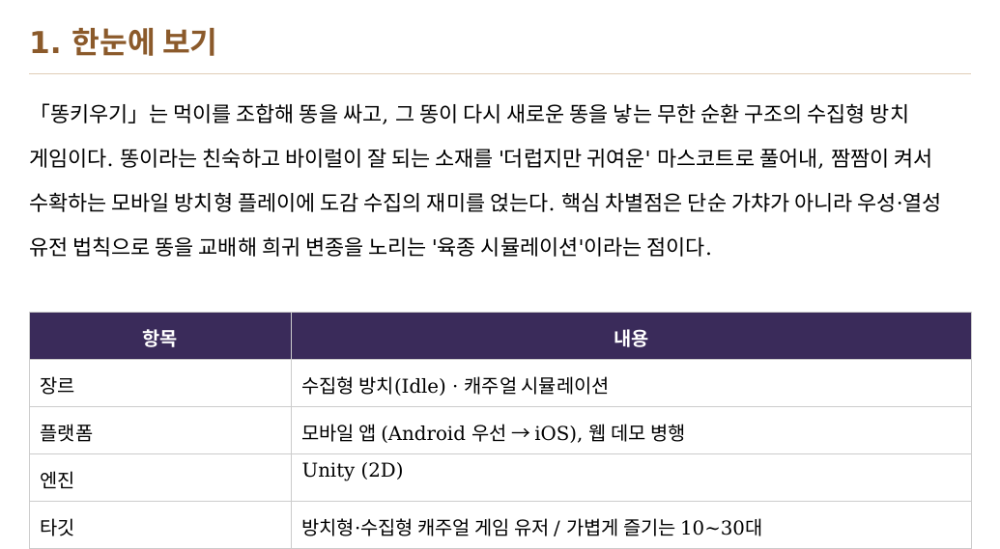
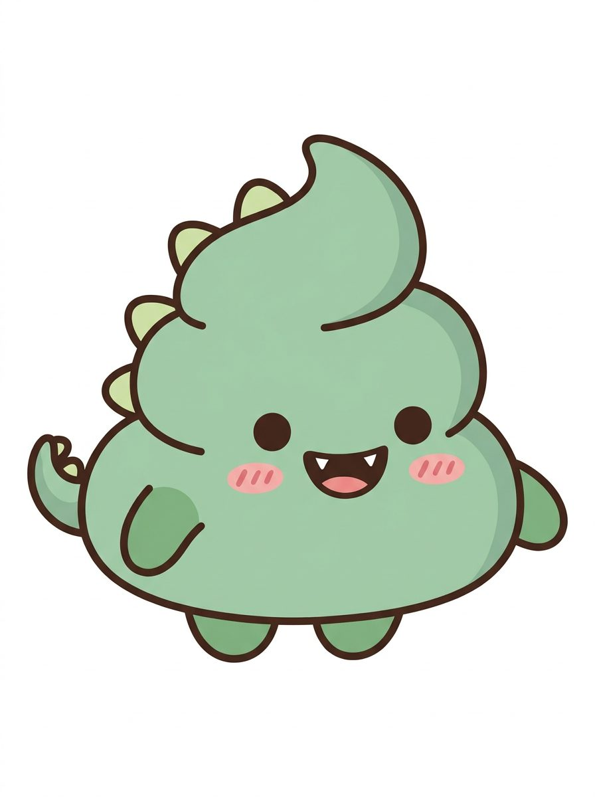
그림체도 세 가지를 비교해 클레이로 정했습니다.
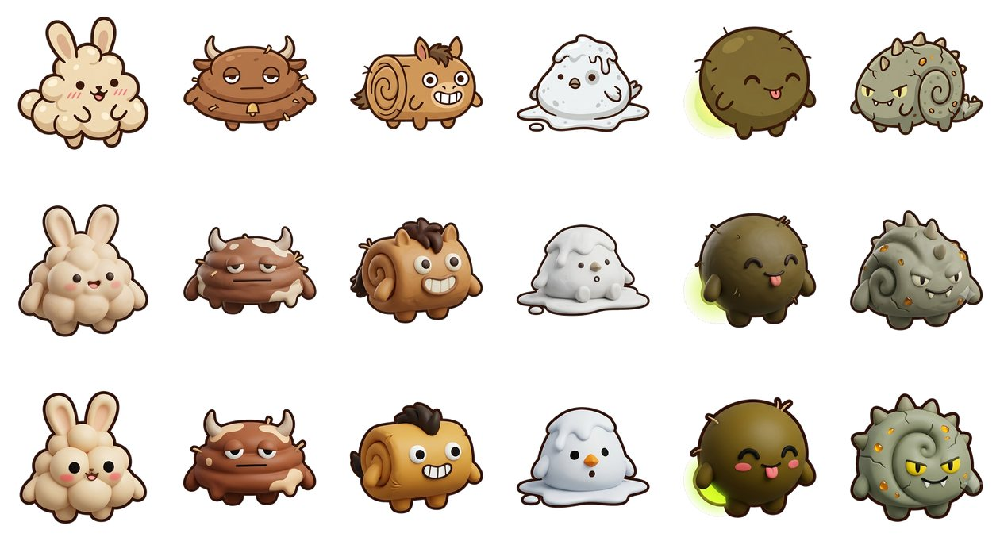
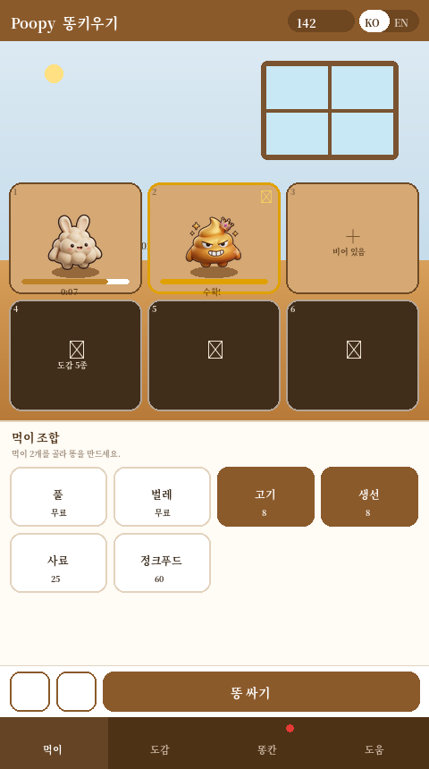
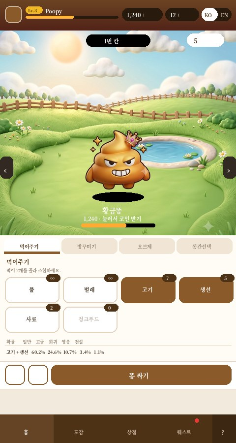
칸에 먹이만 넣는 구조에는 키우는 대상이 없었습니다. 부모 똥에게 먹이를 주면 새 똥이 나오게 바꿨습니다.
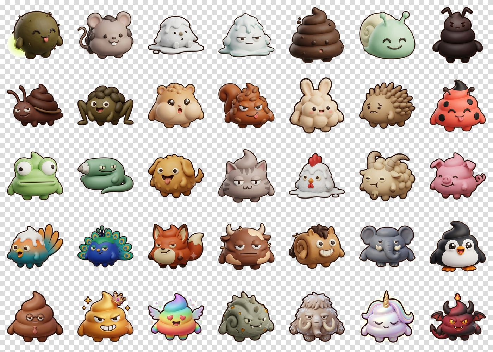
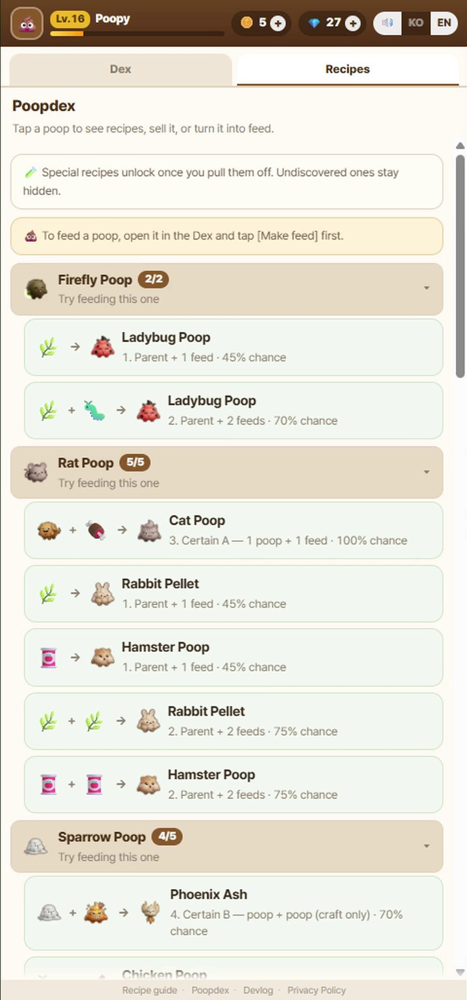
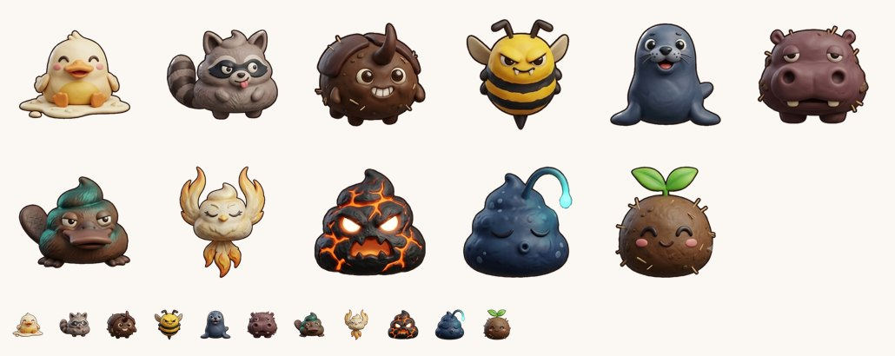
AI로 만든 그림과 코드는 게임 페이지에 먼저 밝혔습니다.
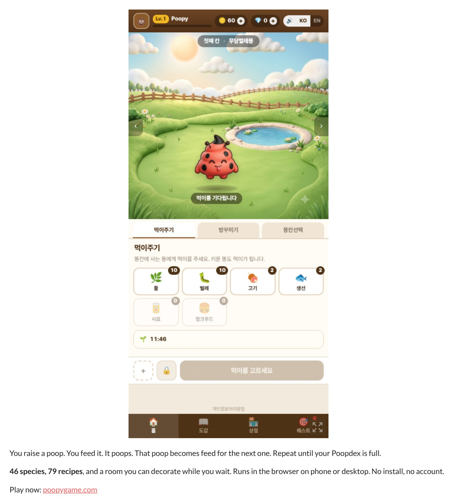
조합법 안내, 도감, 개발 노트 페이지를 함께 올렸습니다.
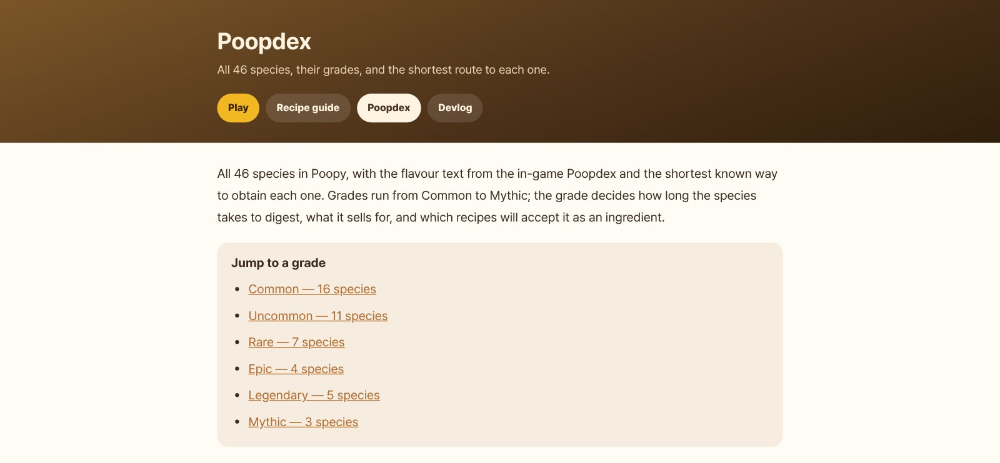
이미지를 WebP로 바꿨습니다. 30일 경제 시뮬레이션과 자동 시험으로 밸런스와 버그를 확인합니다.
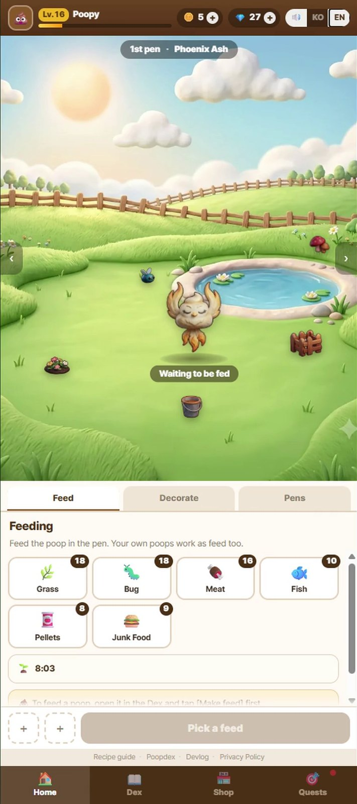
먹이 2개를 고르면 이모지 똥이 나오던 데모가, 똥칸에 사는 똥에게 먹이를 주는 게임이 됐습니다.
처음

지금

37칸 중 3칸을 채운 이모지 도감이, 못 찾은 똥을 실루엣으로 보여 주는 46종 도감이 됐습니다.
처음
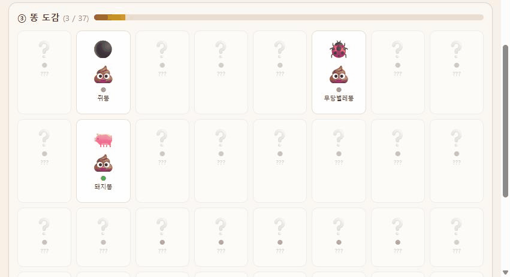
지금
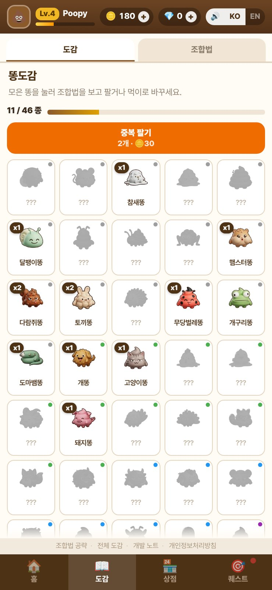
게임 데이터, 빌드 파일, 개발 노트에서 읽은 값입니다.
46종
똥 종류
조합 레시피는 79개입니다.
기준
출처 poopygame.com 게임 데이터
1.6MB
v4 빌드 용량
WebP로 바꾸기 전에는 10.3MB였습니다.
기준
출처 v4 빌드 파일
약480개
자동 시험 확인 항목
시험 묶음은 16개입니다.
기준
출처 poopygame.com 개발 노트
30일
경제 시뮬레이션 기간
밸런스를 맞추려고 돌려 본 기간입니다.
기준
출처 poopygame.com 개발 노트
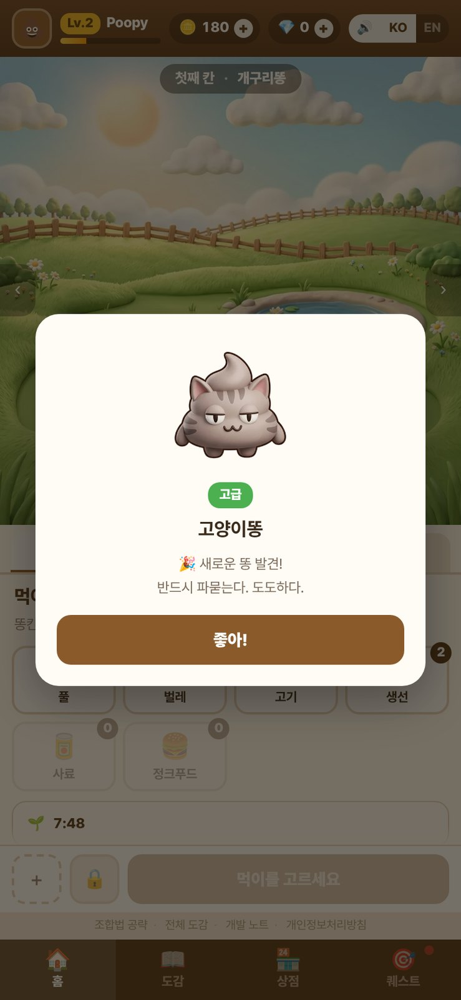